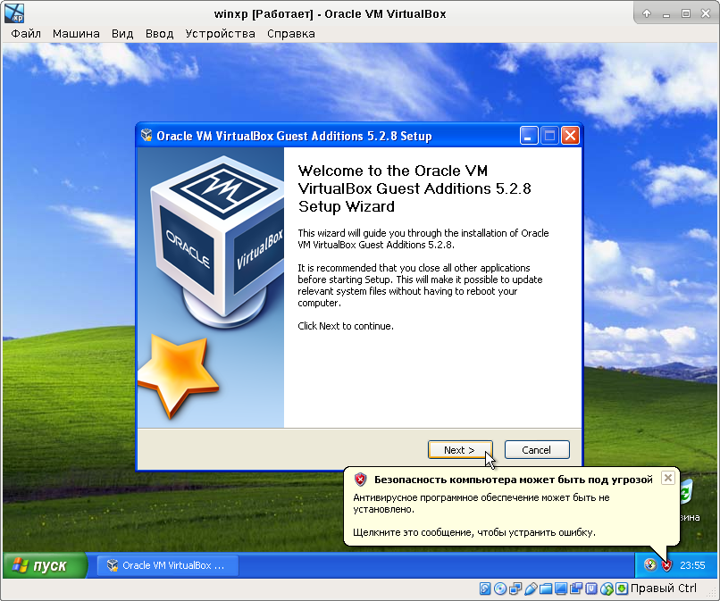
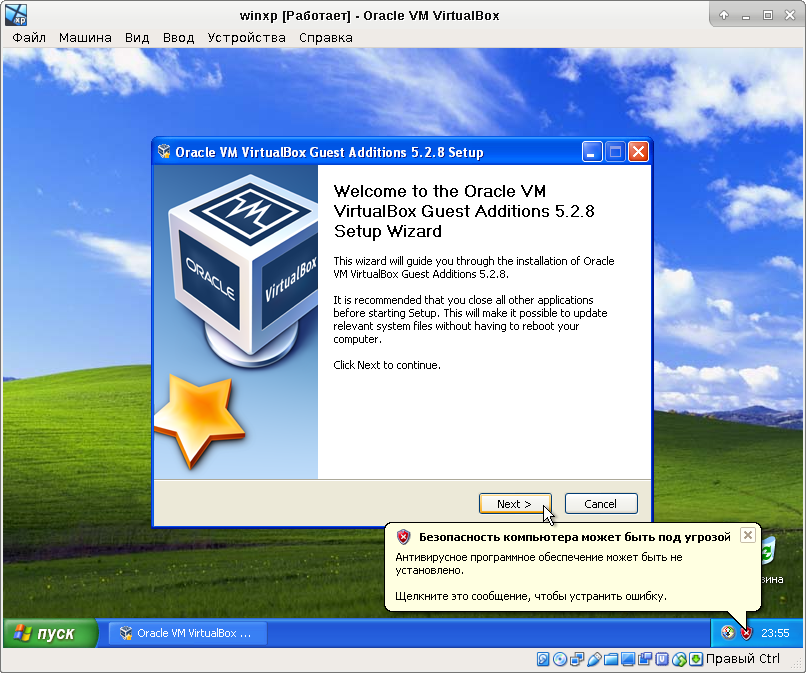

Когда-то я тестировал несколько эмуляторов, о чём написал заметку Эмуляторы VirtualBox и QEmu в Debian. Недавно мне снова понадобилось воспользоваться эмулятором и я решил воспользоваться старыми наработками. Однако, ситуация с тех пор несколько изменилась. Во-первых, VirtualBox теперь отсутствует в стандартных репозиториях Debian, а во-вторых, графическая оболочка qemulator для qemu теперь обросла функциями и сменила название на virtualbricks.
Попробуем установить virtualbricks:
# apt-get install virtualbricks
Сразу после запуска программа выводит сообщение об отсутствующих компонентах:
Если проигнорировать это сообщение, создать виртуальную машину и попытаться перейти к её настройке, выводится сообщение о том, что virtualbricks не смог распознать версию qemu:
Если попытаться установить недостающие компоненты, сообщений об отсутствующих компонентах станет меньше.
# apt-get install vde2-cryptcab qemu ksmtuned
Однако делу это совершенно не помогает: если после создания виртуальной машины попытаться перейти к её настройке, то программа по-прежнему продолжает выводить сообщение о нераспознанной версии qemu. Как видно, попытка нарастить функциональности при помощи груды кода на Python, не пошла проекту на пользу. На этом я решил закончить эксперименты с virtualbricks, удалил всё установленное и решил снова попытать судьбу с VirtualBox.
На официальном сайте проекта в разделе скачивания Download VirtualBox for Linux Hosts имеется рекомендация устанавливать VirtualBox в Debian Jessie из репозитория https://download.virtualbox.org/virtualbox/debian. Пропишем его в файл /etc/apt/sources.list:
deb http://download.virtualbox.org/virtualbox/debian stretch contrib
Обратите внимание, что на официальном сайте указана ссылка, использующая протокол https. Эта ссылка не работает. Чтобы репозиторий подключился без ошибок, нужно поменять в ссылке протокол https на http, как это и было сделано в строчке выше.
Сразу же скачаем и установим в систему PGP-ключи репозитория:
# wget -q https://www.virtualbox.org/download/oracle_vbox_2016.asc -O- | sudo apt-key add - # wget -q https://www.virtualbox.org/download/oracle_vbox.asc -O- | sudo apt-key add -
Обновим списки пакетов, доступных через репозитории:
# apt-get update
И установим пакет с VirtualBox:
# apt-get install virtualbox-5.2
При попытке запуска созданной виртуальной машины может появиться сообщение об ошибке следующего вида:
Для работы VirtualBox использует собственный модуль ядра vboxdrv. Если этот модуль не загружен, то и VirtualBox не будет работать. Для устранения ошибки нужно подгрузить модуль ядра:
# modprobe vboxdrv
Чтобы этот модуль автоматически загружался при загрузке системы, его можно вписать в файл /etc/modules:
vboxdrv
Если в системе отсутствует модуль ядра vboxdrv для текущей версии ядра, то modprobe будет ругаться следующим образом:
# modprobe vboxdrv modprobe: FATAL: Module vboxdrv not found in directory /lib/modules/4.9.0-6-amd64
В частности, такая ошибка может появиться, если вы обновляли систему и было установлено ядро новой версии. В таком случае нужно собрать модуль ядра снова. Для этого надо выполнить команду vboxconfig:
# vboxconfig
Если в системе не установлены заголовочные файлы ядра, то команда сообщит об ошибке сборки модуля ядра вот таким образом:
vboxdrv.sh: Building VirtualBox kernel modules.
This system is currently not set up to build kernel modules.
Please install the Linux kernel "header" files matching the current kernel
for adding new hardware support to the system.
The distribution packages containing the headers are probably:
linux-headers-amd64 linux-headers-4.9.0-6-amd64
Чтобы решить эту проблему, нужно установить пакет с заголовочными файлами ядра:
# apt-get install linux-headers-amd64
Таким образом, нужно сначала установить заголовочные файлы ядра, потом собрать модуль ядра vboxdrv при помощи команды vboxconfig, затем подгрузить модуль ядра и прописать его автозагрузку в файл /etc/modules:
# apt-get install linux-headers-amd64 # vboxconfig # modprobe vboxdrv # vim /etc/modules
Последняя команда в списке запускает текстовый редактор для редактирования файла /etc/modules, куда нужно вписать одну строчку:
vboxdrv
После установки запустим VirtualBox при помощи команды virtualbox, создадим и настроим виртуальную машину:

Виртуальная машина в целом создана, теперь просмотрим и отредактируем остальные её свойства:
Для установки Windows в виртуальную машину уберём из виртуальной машины дисковод для дискет и вставим в CD-ROM виртуальной машины образ установочного диска:
Настройка общей папки, через которую впоследствии можно будет обмениваться файлами между компьютером и виртуальной машиной:
Запустим созданную виртуальную машину:
На этом экране можно видеть сводку свойств виртуальной машины:
После установки Windows в виртуальную машину (не показано), стоит поставить в неё Oracle VM VirtualBox Guest Additions - дополнительные драйверы и программы, делающие работу с виртуальной машиной более комфортной:
 


После установки Oracle VM VirtualBox Guest Additions заработал общий каталог с хост-системой, ради чего, преимущественно, эти дополнения и ставились: